Trace of REG-002 - IPA-2301-2026-27 (25 screenshots, in the order they were taken)
Probable root cause
- Inconsistent: the Pre-Alerts row lists AirManifest under 'Unresolved Documents' (not linked) but the viewer shows AIRMANIFEST under Linked documents (intermittent: the row and the viewer disagree).
- PACKING LIST not found anywhere in the pre-alert: look at the classification of the matching page (e.g. another type under the House).
01. Pre-Alerts tab: the row of this case (Pages, Missing Docs, Job Progress, CW Status)
01_prealerts_list.png
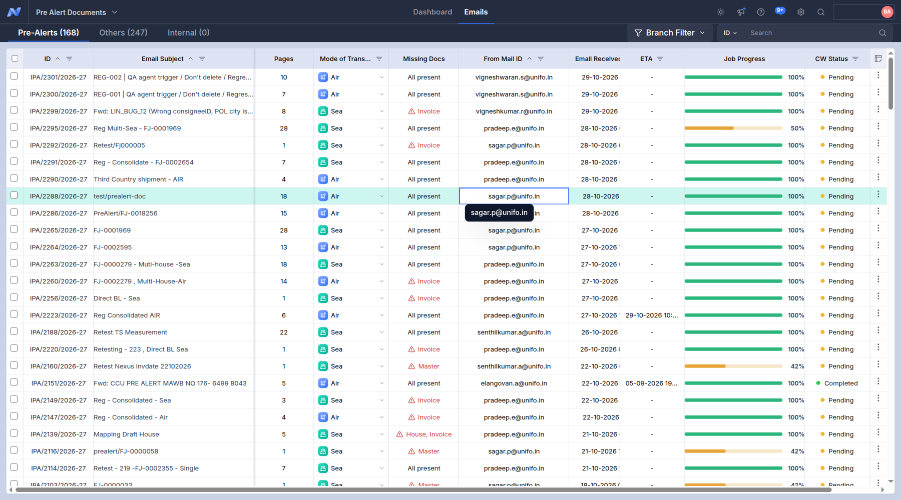
02. Pre-Alerts tab: the row of this case
02_list.png

03. Pre-Alerts tab, row expanded: Shipment Details (Master / House records, Bill No., status)
03_prealert_expanded.png
04. Pre-Alerts tab, row expanded, scrolled to 'Unresolved Documents' (what Nexus lists as not linked, with its remark)
04_unresolved_row.png
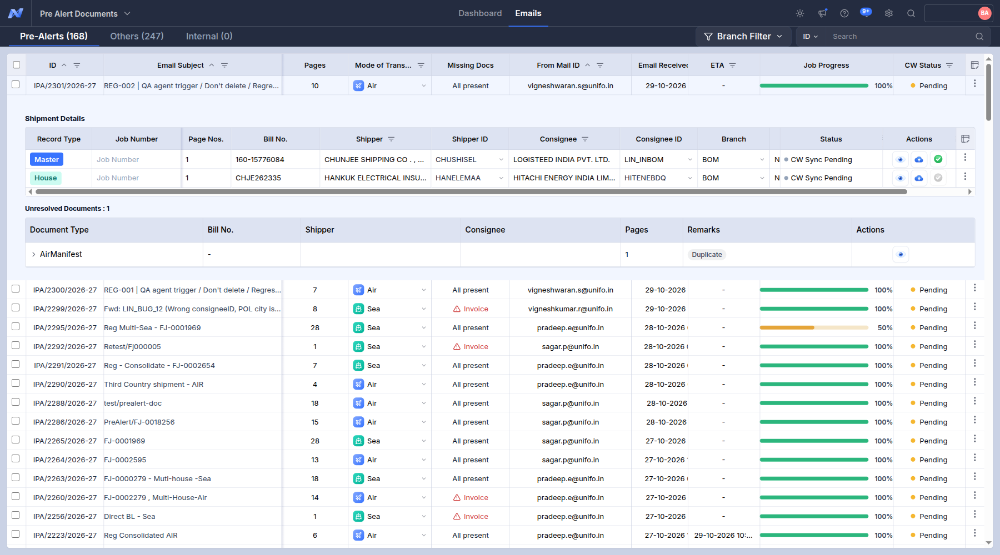
05. Viewer, parent Master: Linked / Unmatched / Unclassified documents and the Master data
05_parent_Master.png
06. parent Master DEBITNOTE
06_parent_Master_DEBITNOTE.png
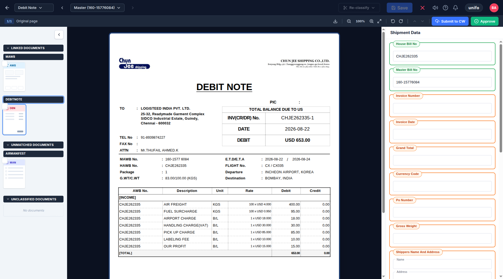
07. Viewer, parent House: Linked / Unmatched / Unclassified documents and the House data
07_parent_House.png
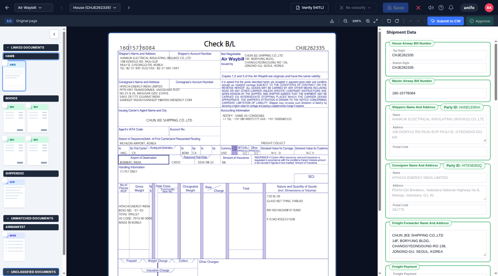
08. parent House INVOICE
08_parent_House_INVOICE.png
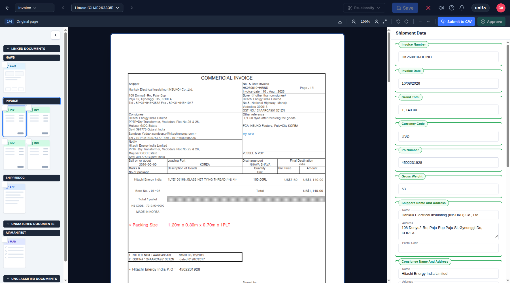
09. parent House SHIPPERDOC
09_parent_House_SHIPPERDOC.png
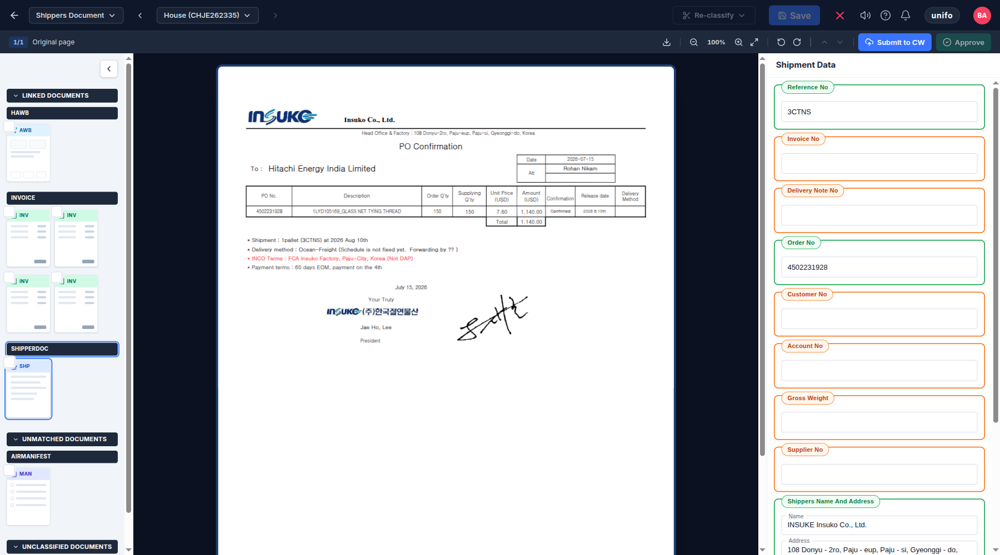
10. Viewer, parent Air Manifest: Linked / Unmatched / Unclassified documents and the Manifest data
10_parent_Manifest.png
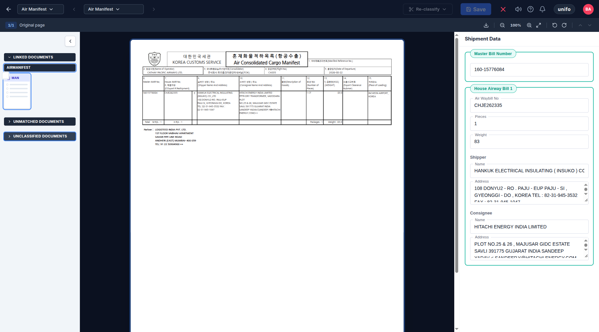
11. Others tab: follow-up emails and duplicates of this case
11_others_tab.png
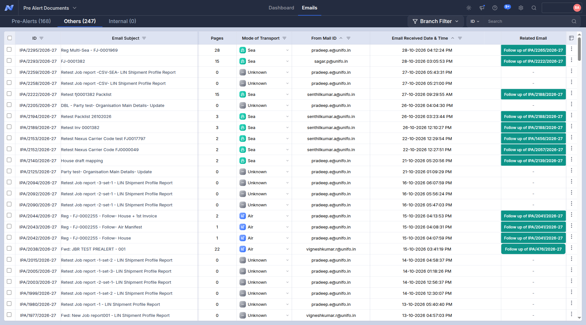
12. Pre-Alerts tab: the row of this case (Pages, Missing Docs, Job Progress, CW Status)
12_prealerts_list.png
13. Pre-Alerts tab, row expanded: Shipment Details (Master / House records, Bill No., status)
13_prealert_expanded.png
14. Pre-Alerts tab, row expanded, scrolled to 'Unresolved Documents' (what Nexus lists as not linked, with its remark)
14_unresolved_row.png
15. Master data panel (checked against the document)
15_master_data.png
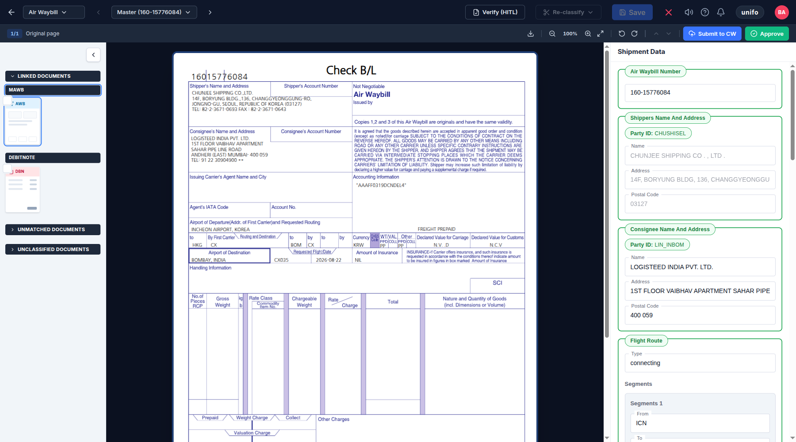
16. Pre-Alerts tab: the row of this case (Pages, Missing Docs, Job Progress, CW Status)
16_prealerts_list.png
17. Pre-Alerts tab, row expanded: Shipment Details (Master / House records, Bill No., status)
17_prealert_expanded.png
18. Pre-Alerts tab, row expanded, scrolled to 'Unresolved Documents' (what Nexus lists as not linked, with its remark)
18_unresolved_row.png
19. House data panel (checked against the document)
19_house_data.png
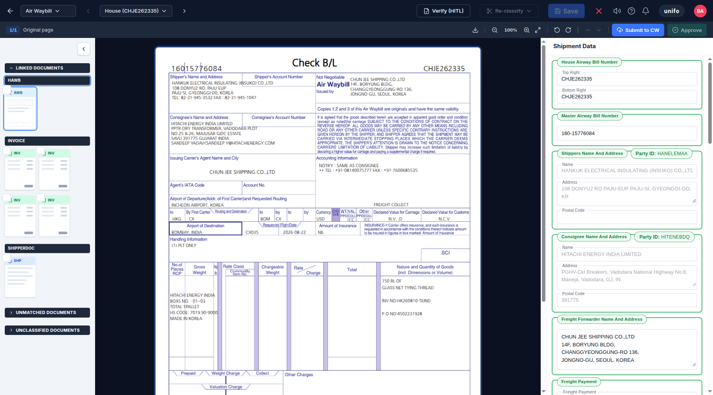
20. Pre-Alerts tab: the row of this case (Pages, Missing Docs, Job Progress, CW Status)
20_prealerts_list.png

21. Pre-Alerts tab, row expanded: Shipment Details (Master / House records, Bill No., status)
21_prealert_expanded.png
22. Pre-Alerts tab, row expanded, scrolled to 'Unresolved Documents' (what Nexus lists as not linked, with its remark)
22_unresolved_row.png
25. Shipper Document data panel
25_shipperdoc_data.png
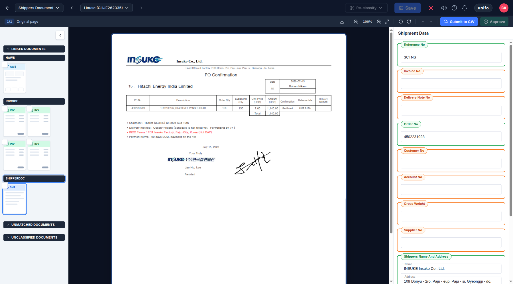